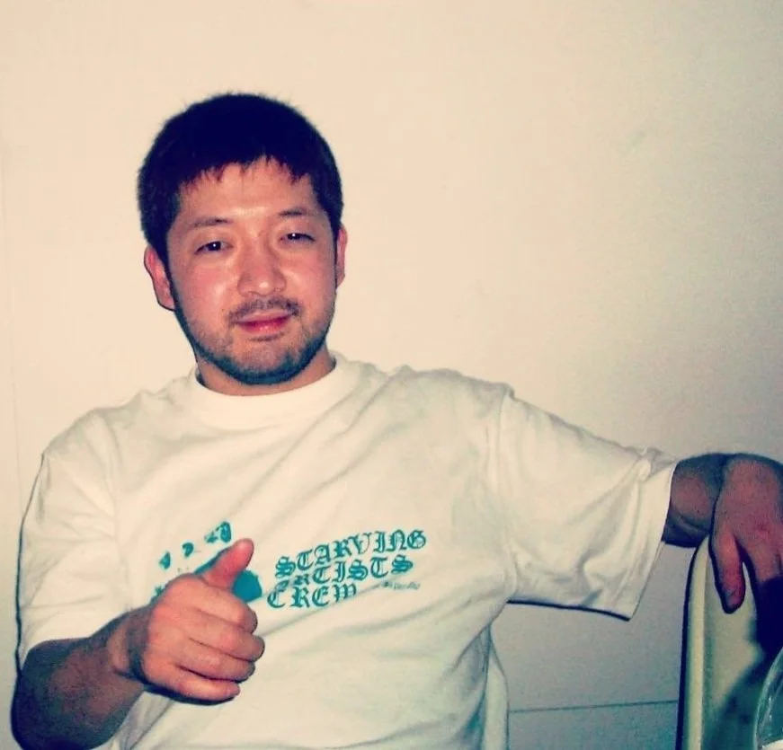
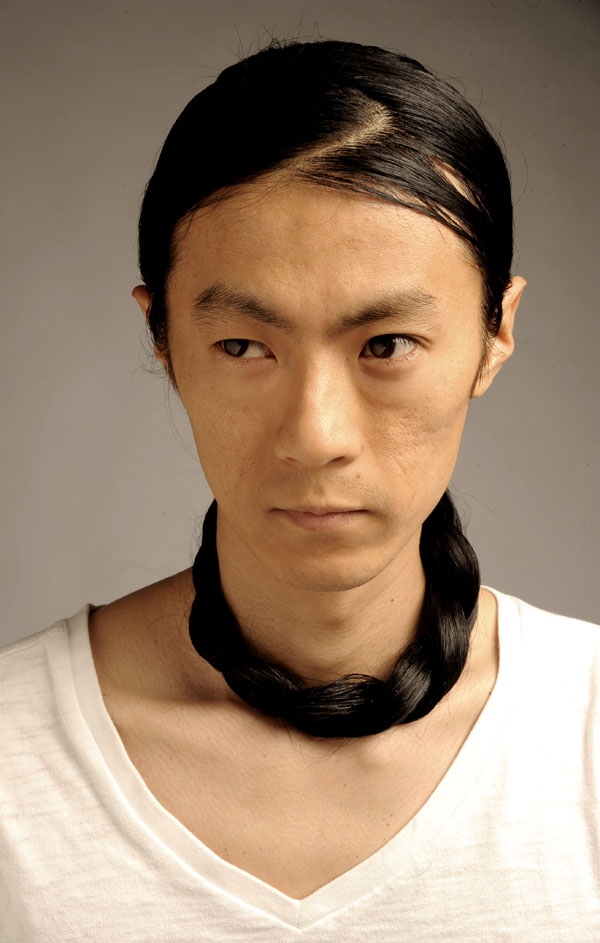

Here are the artists I like and a few songs I recommend.
Genre: Jazz-hop / Instrumental Hip-hop

Nujabes was a Japanese producer and DJ from Tokyo. His real name was Jun Seba — Nujabes is just his name spelled backwards. He is best known for mixing smooth jazz samples with hip-hop beats. His music is calm, warm, and very beautiful. He also made the soundtrack for the popular anime Samurai Champloo. Sadly, he passed away in 2010, but his music is still loved by millions of people around the world.
Recommended Songs:
Genre: Jazz-hop / Conscious Hip-hop

Shing02 is a Japanese-American rapper and lyricist who is best known for his long collaboration with Nujabes. He grew up between Japan and the United States, and his lyrics often mix English and Japanese themes together. His most famous work is the Luv(sic) Hexalogy — a six-part song series he made with Nujabes. The writing is thoughtful and poetic, and it pairs perfectly with Nujabes's production style.
Recommended Songs:
Genre: Jazz-hop / Contemporary Hip-hop
Kenichiro Nishihara is a producer and beatmaker from Tokyo, Japan. His music mixes jazz, hip-hop, and electronic sounds together in a way that feels very smooth and modern. He often collaborates with other artists, including Shing02. If you enjoy Nujabes, Kenichiro Nishihara is a great next step — his music has a similar feel but with a slightly more modern and polished sound.
Recommended Songs:
Genre: Chillhop / Downtempo / Ambient
Re:plus is a Japanese producer who makes very calm and relaxing music. His style is often described as chillhop or downtempo — slow, soft beats with jazzy melodies layered on top. This is the kind of music I put on when I am reading or doing focused work. It is not flashy or loud, but it creates a really comfortable atmosphere. Re:plus is a bit less well-known than Nujabes, but his music is just as good for quiet listening.
Recommended Songs:
Genre: Acid Jazz / Soul / Electronic
.jpeg)
Gota Yashiki is a Japanese drummer, producer, and musician born in Kyoto in 1962. He is one of the most important figures in Japanese music history. He worked with huge international artists like Soul II Soul, Sinéad O'Connor, Seal, and Simply Red. Together with Hiroshi Fujiwara, he helped found Major Force, a legendary Japanese dance music label. His drumming style is very groovy and precise — you can hear it across many different genres.
Recommended Songs:
Genre: Electronic / Ambient / Streetwear Culture Music
.jpeg)
Hiroshi Fujiwara is one of the most legendary figures in Japanese street culture. He introduced hip-hop to Japan in the 1980s after traveling to New York and meeting artists like Grandmaster Flash. As a musician, he is known for blending ambient, electronic, and hip-hop sounds. Together with Gota Yashiki and others, he co-founded Major Force, a label that shaped Japanese club and dance music. His taste and influence go far beyond just music — he is also famous in fashion and design.
Recommended Songs:
Genre: Post-punk / Gothic Rock / New Wave

The Cure is a British band formed in 1976, led by singer Robert Smith. They are one of the most important bands in post-punk and gothic rock. Their music can be very dark and emotional, but also surprisingly catchy and melodic. I did not expect to love them as much as I do, but once I started listening I could not stop. Their songs are very layered — there is always something new to notice on the tenth listen that you missed on the first.
Recommended Songs:
Go back to the Home page to learn more about me.